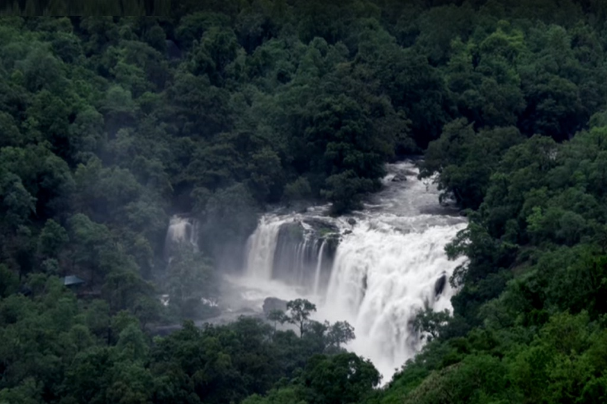
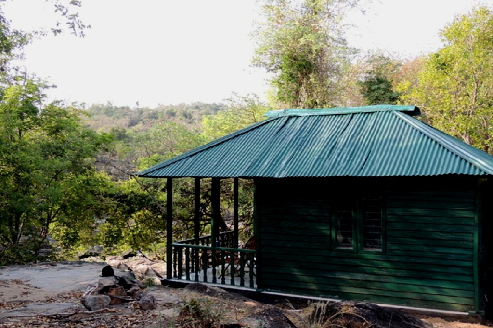
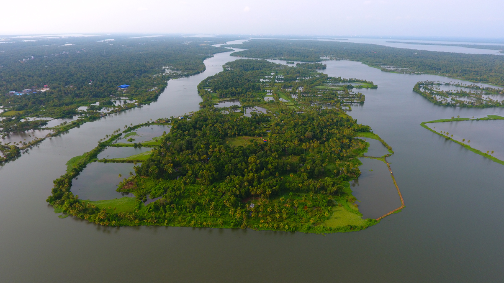
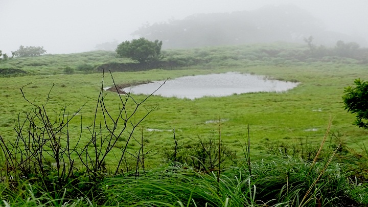
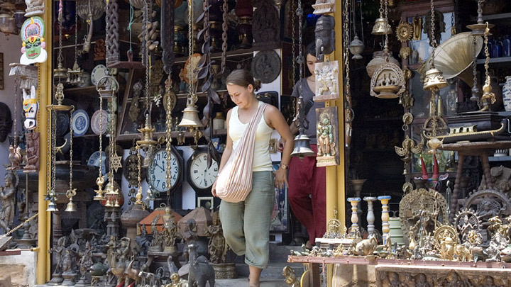

WHERE TO GO


PARAMBIKULAM
The Woods Beckon...
Romance, wildlife or adventure holidays - the woods and wildlife of Parambikulam Tiger Reserve in Palakkad district of Kerala won't disappoint you. Surrounded by other protected wildlife sanctuaries, the 643.66 sq km of greenery is one of the best protected ecological parks in the country. From the elusive tiger to the fiery leopard or the majestic Indian elephant or fresh water crocodiles, the breathtaking landscape is home to a plethora of endemic flora and fauna.

Parambikulam Tiger Reserve
Parambikulam Tiger Reserve is situated in Chittur taluk of Palakkad district and is about 100 km away from Palakkad. The challenging hill ranges here are placed at an altitude of 300 to 1438 m above sea level and the place offers a good climate with temperatures ranging from 15 degree Celsius to 32 degree Celsius. Sprawling over an area of 285 sq km, Parambikulam can boast of the first scientifically managed teak plantations of the world and also houses the world's tallest and oldest teak tree.THOOVANAM FALLS
Trek to Thoovanam falls
It is a popular trekking trail in Munnar. Perhaps a trek to Thoovanam falls in the jungle is the best way to get to the soul of Chinnar. This 4 km trekking trail starts from Alampetty Check post. It is a guided programme which usually takes 3 hours from the check post. This is a moderate level trek and you find in the Chinnar River which accompanies you on one side, your best comrade. The sight of Thoovanam waterfalls from a distance itself takes away all the fatigue of the long trek under a punishing sun. Timing: 08.00 AM – 02.00 PM (in between 3 hours)

Log House stay
A log house on the banks of the river gives you an idea about the kind of night one could spend in Chinnar. You stay in the middle of a vast forest where (the guide tells you in a tone of an understatement), every animal you can expect in a forest like this has dutifully registered its presence. The stay includes dinner and breakfasts.

Jellimala Log House, Squirrel House, Koottar Log House, Pambar Log House, Churilipetty Log House and Karakkad Tree House are available in Chinnar. Check-in: 02.00 PM and Check-out: 10.00 AM
MALARICKAL VILLAGE
Nestled far away from the chaos of urban life, there exists a quaint hamlet in the heart of Kottayam district. All it offers those who stumble upon it are a soothing experience of village life amidst endless paddy fields. Its massive stretches of backwaters and intrinsic natural beauty are slowly attracting tourists who seek a rendezvous wholly detached from their routine. Malarickal or Malarikkal is a jewel that people in Kerala are only slowly awakening to themselves.

KAKKATHURUTH
Kakkathuruth is a spectacular tiny island on Kerala’s backwaters in Alappuzha, has been listed in National Geographic’s ‘Around the World in 24 Hours,’ a photographic tour of travel-worthy spots in the world. The emerald-fringed ‘Island of Crows’ is a quiet place surrounded by Vembanad Lake, offers a haven for birdwatchers.

PAITHALMALA
An invigorating 6 km trek, a trail interspersed with rare endemic species, waterfalls and a panoramic view of neighbouring Karnataka, are some of the primary attractions of the magnificent hill station of Pythal Mala or Paithalmala in Kannur. One of the highest peaks in Kannur, this enchanting hill station is located about 65 km from the main town and about 4500 ft. above sea level, one must traverse a good distance to reach this quaint spot. But the payoff is immediate, as vouched by many a trekking aficionado.

KUTHIRAMALIKA
122 smiling wooden horses await all who visit ‘Kuthiramalika’, which means “palace of horses”. Formally known as Kuthiramalika Palace Museum or Puthenmalika Palace Museum, it is a pristine two-storied palace near the Sree Padmanabhaswamy Temple in Thiruvananthapuram. Built by Swathi Thirunal Balarama Varma, who was Maharaja of the Kingdom of Travancore in British India, it takes one back to the 1840s when it was first constructed. It is a great example of the Kerala school of architecture and is made from teakwood, rosewood, marble, and granite. The museum houses idols and sculptures made from white marble, Kathakali figures, Belgian mirrors and paintings. The flourishing spice trade between Kerala and the world made it possible to obtain those items.

CHANDRAGIRI FORT
Seeped in history, the Chandragiri Fort in Kasaragod lies at the confluence of the Payaswini River and the Arabian Sea. This 17th century fort was built by Sivappa Naik of Bedanore. Situated atop hill ruins. People come here to watch the sunset from the ancient Kizhur Siva Temple at Chandragiri.

JEW TOWN
Jew Town, a narrow street between Mattancherry Palace and the Synagogue, is a favourite haunt of antique hunters. Some of the most pristine and historically relevant artefacts of our times have been unearthed by our visitors here. While a huge bronze vessel catches your eye first, each of the shops here contains beautiful items with quirky and interesting stories. They are like fractions of history, waiting for the right person to come and finally claim them.
